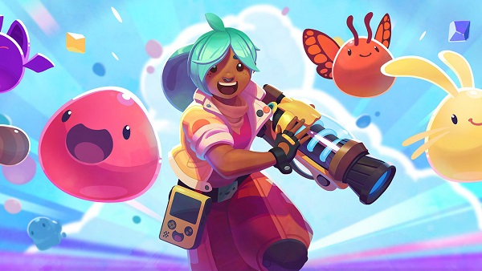
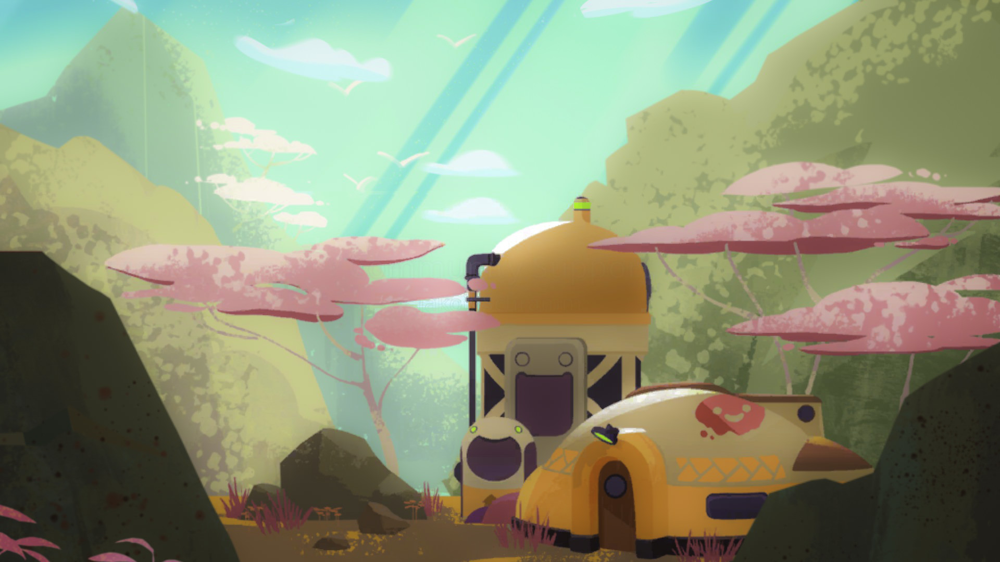

|  |
Slime Rancher é um videogame de aventura e simulação de vida em primeira pessoa desenvolvido
e publicado pelo estúdio independente americano Monomi Park. O jogo foi lançado como um
título de acesso antecipado em janeiro de 2016, com lançamento oficial para Windows , macOS ,
Linux e Xbox One em 1º de agosto de 2017.
|
O jogo é jogado em um mundo aberto e de uma perspectiva em primeira pessoa . O jogador controla uma personagem chamada Beatrix LeBeau, uma fazendeira que se muda para um planeta distante da Terra chamado Far Far Range para viver a vida de uma " fazenda de slimes ", que consiste em construir seu rancho e explorar o mundo do Far Far Range para coletar, criar, alimentar e criar slimes. Slimes são organismos vivos gelatinosos de vários tamanhos e características. Para progredir, ela conta com anotações deixadas pelo ex-proprietário do rancho que a ajudam em sua jornada pela Far Far Range.
O desenvolvimento do Slime Rancher começou no apartamento de Popovich. Como Popovich era um artista e designer em vez de um programador, ele contou com o código de outras pessoas para criar um protótipo do jogo. Ele finalmente contratou o diretor técnico Mike Thomas para ajudar na programação. Eles trabalharam no jogo oito horas por dia, uma prática que Popovich usava com os funcionários do Monomi Park para evitar crises
O jogo deveria inicialmente entrar no acesso antecipado após um ano, mas foi adiado por seis meses.
O lançamento completo do jogo obteve uma pontuação de 81/100 no Metacritic , com revisores dizendo que ele tinha a capacidade de mantê-lo viciado por horas. Os revisores também disseram que era relaxante e catártico, mas bastante repetitivo, e explora com sucesso a natureza viciante dos simuladores agrícolas.
|  |
Em maio de 2017, o jogo vendeu mais de 800.000 cópias. Em 28 de fevereiro de 2019,
o jogo vendeu 2 milhões de cópias. Em 13 de janeiro de 2022, o jogo vendeu mais de
5 milhões de cópias.
|